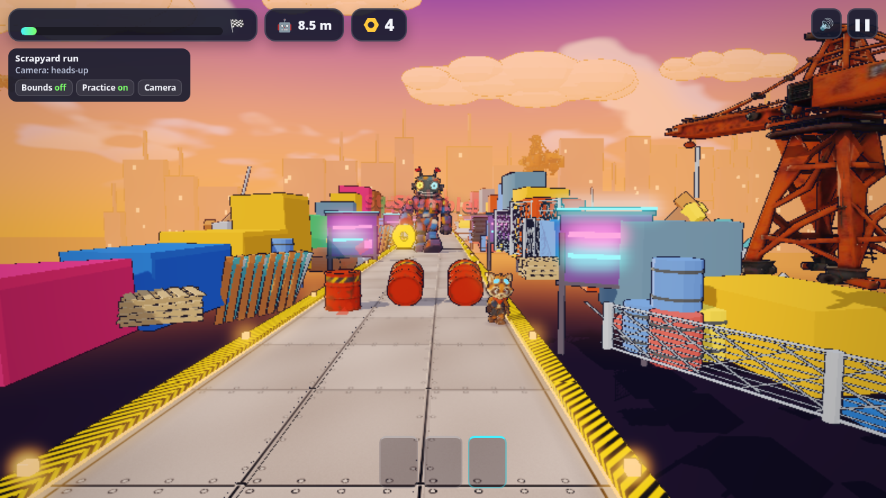
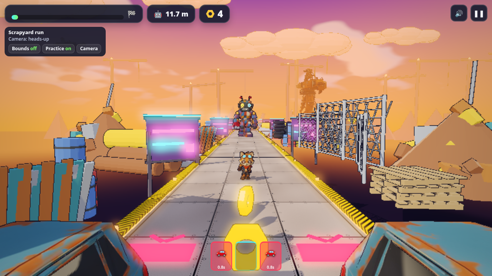
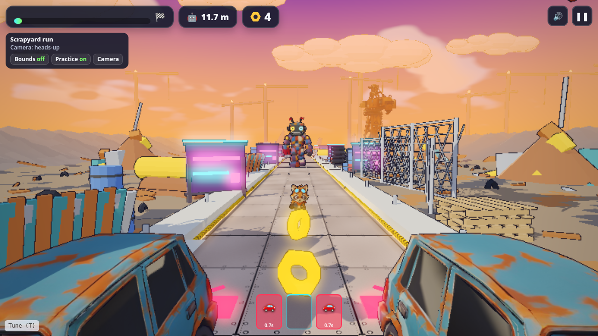

The track was playable early. Making it feel like a place took three passes: real hazard props, then a living backdrop, then a mech that performs instead of just following you.
Hazard props: fal reference → Tripo → Blender
Chong-U (owner prompt) · Nov 4, 11:00 AM
in the meantime let's actually create assets required for the actual game, including the big mecha.
we should use image generation to create reference images for each of these items an then use tripo to generate them
we can use blender for things we can model ourselves
That one message is the asset policy. Things with character (mech, oil barrel, scrap car) got a fal reference image and a Tripo P1 mesh (50 credits each). Things that are simple geometry (the hex nut, the 8 m lane tile) were built straight in Blender, free.
Blender-built lane tile with hazard-stripe rails · share/media/assets/env_scrapyard_lane.jpg
Making it feel alive
Chong-U (owner prompt) · Nov 4, 4:27 PM
ok the sides and the envrionment and surroundings are too empty, we should generate enough props and then use blender to make some props too, skybox can be improved to give a sense of a living world.
we should have things flying around above and cross over or something to give depth to the scene
Chong-U (owner prompt) · card answer
Approve ~4 Tripo hero props (~40–80 credits) plus Blender fill

Play after the dressing pass (4eb675d) · share/media/kickoff/env-dressing-play.png
Piece
Source
Notes
Crane (landmark)
Tripo text → model, 40 cr
prompt: stylized cartoon rusted orange industrial gantry crane tower with lattice frame and hanging hook, scrapyard, hand-painted game asset, standalone
Scrap plane (flyovers)
Tripo text → model, 40 cr
prompt: stylized cartoon patched-together scrap propeller cargo plane made of rusty sheet metal, side wings, game asset, standalone
Containers, scrap heap
Blender
built instead of the other two Tripo heroes: text → model billed 40 cr each, so 4 would pass the ~80 cap
Planes cross every 11 s and 17 s on two routes for depth. Dressing streams in last, after the lane and the raccoon, so it never slows the first frame.
Credit discipline again: Chong-U approved "~4 heroes (~40–80 credits)". When text → model turned out to bill 40 each, Grok Bot stopped at two (80) and built the rest in Blender instead of overspending.
No more boxes
Chong-U (owner prompt) · Nov 4, 6:05 PM
there's still too many placeholder buildings, we need no square or rectangle cubes
Commit 8dbd5b8 deleted the coloured box "junk walls" and box neon signs, swapped the slab skyline for a non-slab Blender one, and stopped side props from growing in. Only GLB props remain at the sides.
The mech performs: intro cutscene and chase pressure
Intro: the mech drops, slams and roars (about 3 s, skippable) · share/media/trailer/project/assets/footage/intro.mp4
Play opens with a roughly 3 s mech intro: drop, slam, roar. Any key or tap skips it.
During the run the mech leans and lunges, and its stomp rate is tied to the gap, so it reads as pursuit rather than walking in place.
Rules underneath (Rust sim): the mech holds a comfort gap that shrinks from 12 m to 7 m along the course. Every stumble hands it ground. At 1.6 m you are caught.
Pressure: the mech fills the back of the frame · share/media/trailer/project/assets/footage/caught.mp4
Parked: terrain and upright planes
Chong-U (owner prompt) · Nov 5, 9:04 AM
on the side there are a lot of floating props, we need the sides to have terrain/meshes so that it looks proper -yet keeping with the theme.
The planes are flying sideways.

Before: props stand at y = 0 over the pit, so they float · share/media/sides-fix/before-play-a.png

Work in progress: procedural side terrain · share/media/sides-fix/after-play-a.png
The diagnosis, from docs/direction/env-dressing.md: the ground plane is the pit at y = −7, so every side prop placed at y = 0 stood over nothing. The fix adds a free, procedural Blender terrain strip (curb with hazard stripe, cliff skirt down to the pit, flat dirt yard, scrap berm) tiled every 8 m, and turns the plane so its nose leads instead of a wing. Also queued: faster run cycle, mech smash FX on barrels and cars, a mech idle, a jump-out chase start, and an exaggerated surge run.
Parked unshipped as of Nov 5, 9:45 AM HKT.
Takeaways
One sentence of asset policy (generate what has character, model what is geometry) saves credits all game long.
Stream the decoration last; the player only needs the lane and the hero to start.
Placeholders hide problems. Removing the boxes exposed floating props, which led to real terrain.
Threat is presentation: the same chase rules feel very different with an intro, a lean and a stomp that speeds up.
Single-object reference image for a 3D game asset pipeline (image-to-3D).
Subject only: ONE upright rusty steel oil drum (55-gallon barrel shape, slightly squat: about as wide as it is tall), standing on its flat bottom. Chipped faded red-orange paint with patches of brown rust and dents, two raised rolling ribs around the middle, a rim at the top and bottom, a closed lid with a small round bung cap. A bold yellow and black diagonal hazard-stripe band wrapped around the upper part of the drum, slightly worn. A small dark oil drip running down one side. Chunky readable silhouette.
Composition: one barrel, centred, full object visible with generous margin, three-quarter view from slightly above (about 20 degrees down) so the lid and side are both visible. Soft even studio lighting, no cast shadows. Plain flat pale studio gray background (#D0D0D0).
Style: stylized low-poly 3D toon game prop render, flat colour with gentle cel shading, bold simple shapes, clean edges. Match the oil barrel from Scrapyard neon direction D (dusk palette, chunky toy look).
Exclusions: no green screen, no chroma key, no spilled oil puddle, no ground plane, no other objects, no second barrel, no text, no labels, no logos, no characters, no background scenery.
Single-object reference image for a 3D game asset pipeline (image-to-3D).
Subject only: ONE rusted wrecked compact scrap car from a junkyard, a chunky boxy little hatchback (long, narrow, tall body; about twice as long as it is wide). Faded teal-blue paint mostly eaten by orange-brown rust patches, dented doors and crumpled front bumper, one cracked headlight, empty dark window openings with no glass, flat bald tyres on rusty wheels, a slightly crushed roof. Chunky readable toy-like silhouette, all four wheels on the ground.
Composition: one car, centred, full vehicle visible with generous margin, three-quarter front view from slightly above (about 20 degrees down) so the front, one side and the roof are all visible. Soft even studio lighting, no cast shadows. Plain flat pale studio gray background (#D0D0D0).
Style: stylized low-poly 3D toon game prop render, flat colour with gentle cel shading, bold simple shapes, clean edges. Match the junk cars from Scrapyard neon direction D (dusk palette, chunky toy look).
Exclusions: no green screen, no chroma key, no ground plane, no stacked cars, no other vehicles, no other objects, no driver, no characters, no text, no labels, no licence plate text, no logos, no background scenery.